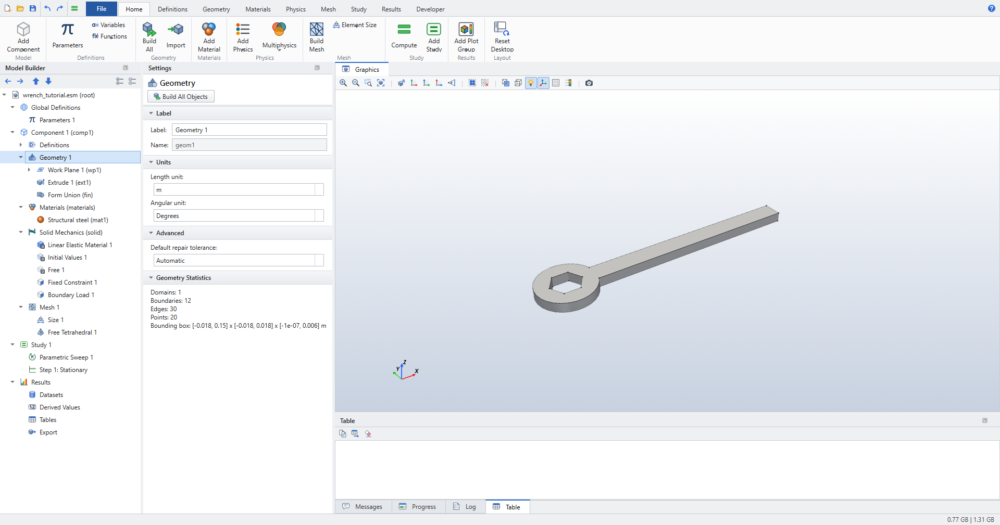
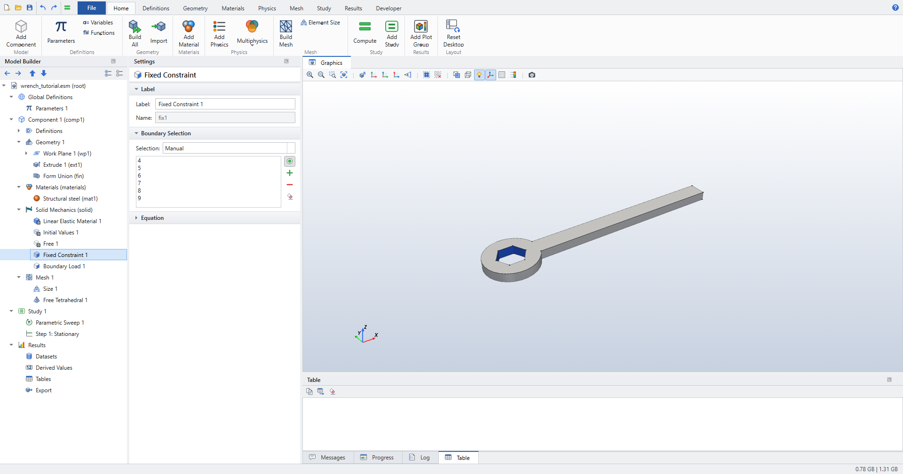
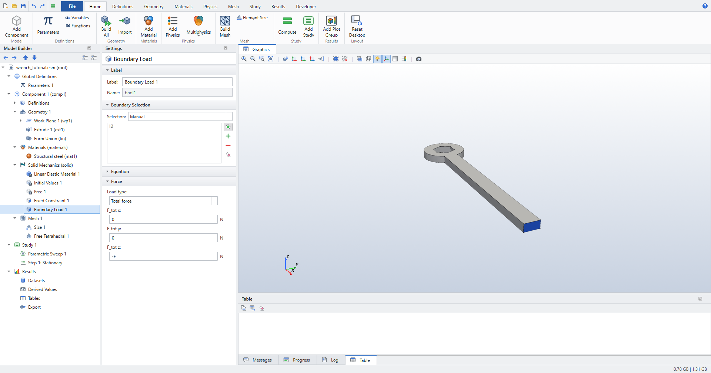
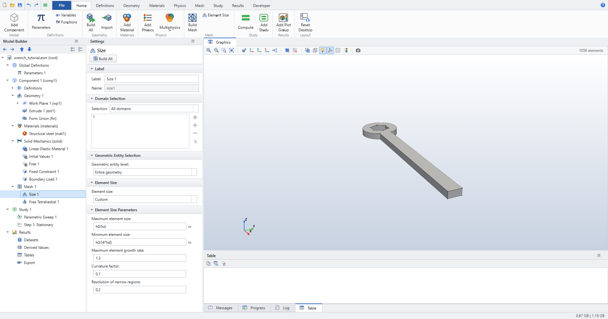
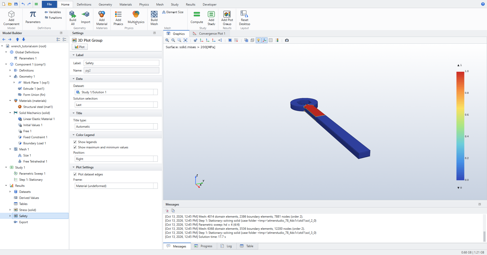
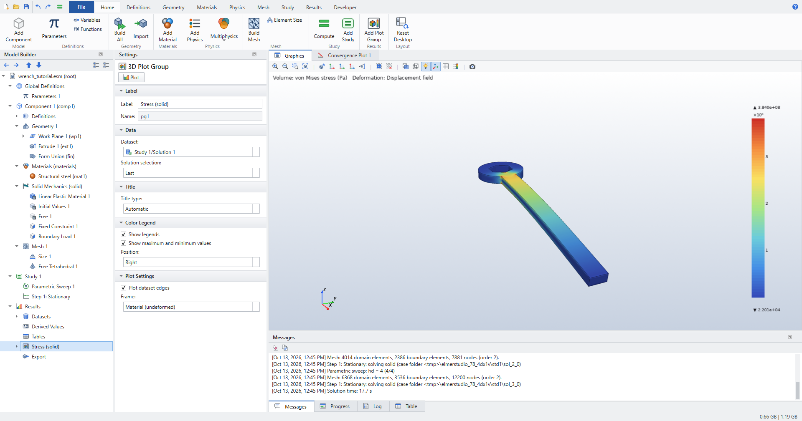
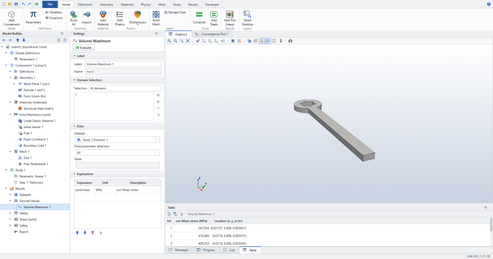
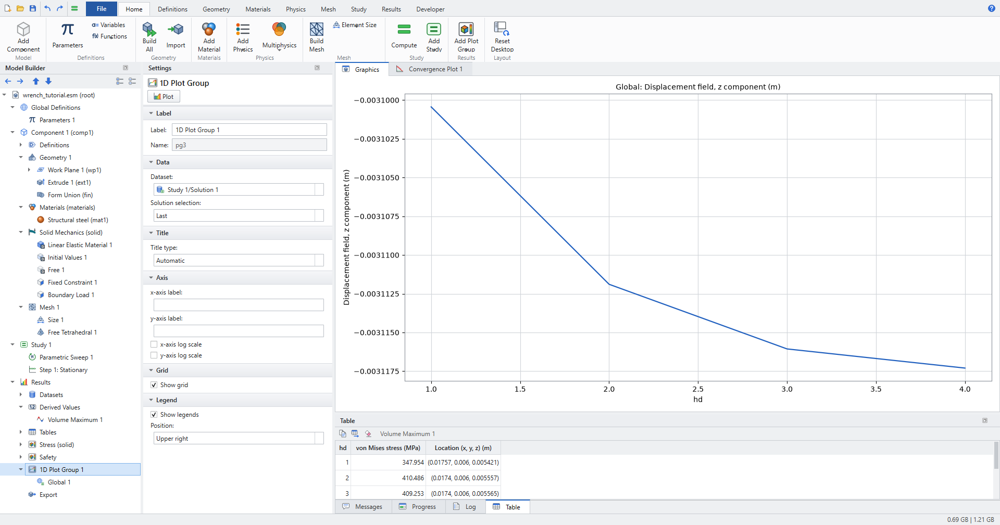

Wrench: Stationary Solid Mechanics
A steel ring wrench grips a hexagonal bolt head while a 150 N hand force pushes down on the end of the handle. You compute the stress and deflection, mark the regions where the stress exceeds 200 MPa, and refine the mesh in a parametric sweep to see which results converge and which do not.
-
Build a 3D part from a parametric 2D sketch (circle, rectangle, polygon, Booleans) and an extrusion.
-
Apply a fixed constraint and a load given as a total force.
-
Plot von Mises stress and a "safety" plot made from a logical expression.
-
Find a maximum and its location with a Volume Maximum and a Maximum coupling operator.
-
Run a mesh convergence study by sweeping a parameter that controls the element size.
Space dimension |
3D |
Physics |
Solid Mechanics (solid), linear elastic |
Study |
Stationary, with a Parametric Sweep over the mesh divider |
Mesh |
Quadratic tetrahedra, from about 2 300 nodes ( |
Solve time |
About 20 seconds for all four meshes (one recorded run: 19.9 s) |
| COMSOL users know this model as the wrench from Introduction to COMSOL Multiphysics. COMSOL imports the wrench from its own geometry file, which is not public, so this tutorial builds a comparable hex-socket wrench from parameters. Loads, materials, plots and the convergence study follow the same workflow. Elmer Studio is an independent project and is not affiliated with COMSOL. |
Start a new model
-
Click (Ctrl+N) and choose Model Wizard.
-
On Select Space Dimension, choose 3D.
-
On Select Physics, expand Structural Mechanics, select Solid Mechanics (solid) and click Add.
-
Click Study, select General Studies › Stationary and click Done.
Solid Mechanics (solid) comes with Linear Elastic Material 1, Initial Values 1 and Free 1: every boundary is free until you add a constraint or a load.
Parameters
-
Click .
-
In the Settings window, enter the following rows in the table:
Name Expression Description F
150[N]Applied load
hd
1Element size divider
h0
1[cm]Starting element size
R
18[mm]Head outer radius
AF
17[mm]Hex across flats
Rc
AF/sqrt(3)Hex circumradius
Lh
150[mm]Handle length
W
12[mm]Handle width
T
6[mm]Wrench thickness
The Value column shows each value in SI units, for example 0.00981495 for Rc.
hd has no unit: it only divides the element size later on.
Geometry
The wrench is sketched in the xy-plane: a round head of radius R, a straight handle reaching to x = Lh, and a hexagonal hole for the bolt.
The sketch is then extruded by the thickness T.
See Geometry and Geometry features for the feature settings.
-
Click Geometry 1, then click . Keep Plane type
Quickand Planexy-plane. -
Right-click Work Plane 1 and choose Primitives › Circle. Set Radius to
R. -
Right-click Work Plane 1 and choose Primitives › Rectangle. Set Width
Lh, HeightW, x0and y-W/2. -
Right-click Work Plane 1 and choose Booleans and Partitions › Union. In Union 1 check
c1andr1under Input objects and clear Keep interior boundaries. -
Right-click Work Plane 1 and choose Primitives › Polygon. Keep Type
Solidand enter the six corners of the hexagon. The coordinates are separated by spaces, so do not put spaces inside an expression:-
x:
Rc*cos(0*pi/3) Rc*cos(1*pi/3) Rc*cos(2*pi/3) Rc*cos(3*pi/3) Rc*cos(4*pi/3) Rc*cos(5*pi/3) -
y:
Rc*sin(0*pi/3) Rc*sin(1*pi/3) Rc*sin(2*pi/3) Rc*sin(3*pi/3) Rc*sin(4*pi/3) Rc*sin(5*pi/3)
-
-
Right-click Work Plane 1 and choose Booleans and Partitions › Difference. In Difference 1 check
uni1under Objects to add andpol1under Objects to subtract. -
Click Difference 1, then click . Extrude 1 takes
wp1as input. Set Distance from work plane toT. -
Click Geometry 1 and press F8 (Build All Objects).
The Geometry Statistics in the Settings window report 1 domain and 12 boundaries. Boundaries 4 to 9 are the six flats of the hexagonal hole; boundary 12 is the end face of the handle at x = 150 mm.

Materials
-
Click .
-
In the Add Material window, select Built-in › Structural steel and click Add to Component.
Being the first material, Structural steel covers the whole wrench. Its Young’s modulus is 200 GPa and its Poisson’s ratio 0.3.
Physics
The bolt holds the socket in place; the hand pushes the handle end down, perpendicular to the wrench.
-
Click Solid Mechanics (solid) and click .
-
In Fixed Constraint 1, click the six flats of the hexagonal hole, boundaries 4, 5, 6, 7, 8 and 9. Zoom in with the mouse wheel to reach them.

Figure 2. Fixed Constraint 1 on the six hexagon flats -
Click Solid Mechanics (solid) again and click .
-
In Boundary Load 1, click the end face of the handle, boundary 12.
-
Set Load type to
Total forceand F_tot z to-F. Leave F_tot x and F_tot y at0.
Figure 3. Boundary Load 1: a total force of −F in z on the handle end
With Load type Total force, Elmer Studio divides the force by the area of the selected faces, so the 150 N are spread evenly over the 72 mm² end face. Elmer itself only knows forces per unit area; the conversion happens when the input file is written.
|
All other boundaries stay free (Free 1). The settings are listed in Solid Mechanics (solid).
Mesh
The element size is tied to the parameters, so that sweeping hd refines the mesh.
-
On the Mesh ribbon, click . Mesh 1 switches to a user-controlled sequence with Size 1 and Free Tetrahedral 1.
-
Click Size 1. Set Element size to
Custom, then set:-
Maximum element size:
h0/hd -
Minimum element size:
h0/(4*hd) -
Curvature factor:
0.1 -
Resolution of narrow regions:
0.2
-
-
Click .
With hd = 1 the maximum element size is 1 cm and the mesh is coarse: about 1 000 elements.
Resolution of narrow regions uses COMSOL’s definition, the approximate number of element layers across a narrow region.

See Mesh.
Study
-
Click Study 1 and click (Ctrl+=).
The solution takes a few seconds. Results gets a Stress (solid) plot group.
Results
Von Mises stress
-
Click Stress (solid). The plot shows the von Mises stress on the deformed shape of the wrench (the deformation is scaled up so you can see it).
The stress is highest in the handle next to the head, where the bending moment is largest and the cross-section changes.
Safety plot
Show where the von Mises stress exceeds 200 MPa:
-
Click . A new plot group with a Surface plot is added.
-
In the plot group, change Label to
Safety. -
Click its Surface 1 and set Expression to
solid.mises > 200[MPa]. -
Click Plot.
A comparison returns 1 where it is true and 0 elsewhere: red marks the region above 200 MPa, blue the rest.

Maximum stress and its location
-
Click . In Volume Maximum 1, enter
solid.misesin the Expression column of the Expressions table andMPain Unit. -
Click Evaluate. The Table window shows the maximum von Mises stress and its location (x, y, z).
-
Right-click Definitions under Component 1 and choose Maximum. In Maximum 1 set Operator name to
maxop1. -
Click , enter
maxop1(solid.mises)as expression and click Evaluate. The value equals the Volume Maximum.
Like COMSOL’s component couplings, maxop1(...) can be used in any result expression, for example in an Annotation or a Global plot.
|
Mesh convergence study
A single mesh does not tell you how accurate a result is. Refine the mesh by sweeping hd.
-
Click Study 1 and click .
-
In Parametric Sweep 1 set Parameter name to
hd, Parameter value list torange(1,1,4)and leave Parameter unit empty. -
Click . The mesh is rebuilt for each value of
hd; the maximum element size goes from 10 mm down to 2.5 mm. -
Click Stress (solid) to see the finest solution.

Figure 6. Von Mises stress on the finest mesh (hd = 4); the messages list the four meshes and the solution time -
Click Volume Maximum 1, set Time/parameter selection to
Alland click Evaluate. The table now has one row per value ofhd.
Figure 7. Volume Maximum of the von Mises stress for each mesh, with its location -
Plot the tip deflection against
hd: click . In Global 1, set Expression (global, e.g. aveop1(T), or a field to reduce) towand Reduction toMinimum, then click Plot.wis the z-displacement; its minimum is the downward deflection of the handle tip.
Figure 8. Tip deflection against the mesh divider hd
See Studies and solving, Results and Plot groups and plots.
Check the results
These are the checks in tests/test_tutorial_wrench.py, which builds this model and runs the convergence sweep.
The numbers in brackets are from one recorded run.
-
The mesh refines with every step of
hd: the node count increases strictly (2 319, 5 206, 7 881 and 12 200 nodes). -
maxop1(solid.mises)equals the Volume Maximum ofsolid.misesfor every mesh (to a relative 1e-12). -
The tip deflection agrees with beam theory: it lies between 0.85 and 1.05 times the cantilever value F·L³/(3·E·I), with L = 150 mm − 17 mm/√3 measured from the socket corners and I = W·T³/12. Beam theory gives 3.19 mm; the model gives 3.100 mm at
hd= 1 and 3.117 mm athd= 4 (0.97 to 0.98 of the beam value; the head is stiffer than a slender beam). -
The tip deflection converges: it grows with every refinement and each change is smaller than the first (3.100, 3.112, 3.116, 3.117 mm).
-
A small region exceeds 200 MPa: between 0 and 20 % of the volume (7.9 % on the coarsest mesh, 4.9 % on the finest).
-
The peak stress sits at the corner where the handle meets the head (about x = 17.4 mm, y = 6 mm).
| The maximum von Mises stress does not converge (348, 410, 409 and 384 MPa in the recorded run). This stand-in wrench has a sharp re-entrant corner between handle and head, where the elastic stress is singular: refining the mesh does not settle it. COMSOL’s wrench has fillets there, which is why its maximum stress converges. Judge convergence on quantities such as the deflection, or round the corner with a fillet. |
What next
-
Round the handle/head corner: add a on the two vertical edges where the handle meets the head, compute the sweep again, and compare the maximum stress per mesh with the sharp-corner values above.
-
Change
Fand compute again; in this linear model all stresses and displacements scale with the load. -
Try the Busbar: Joule Heating tutorial for a coupled electric and thermal model with a parametric sweep.
-
Keyboard shortcuts are listed in Keyboard and mouse.